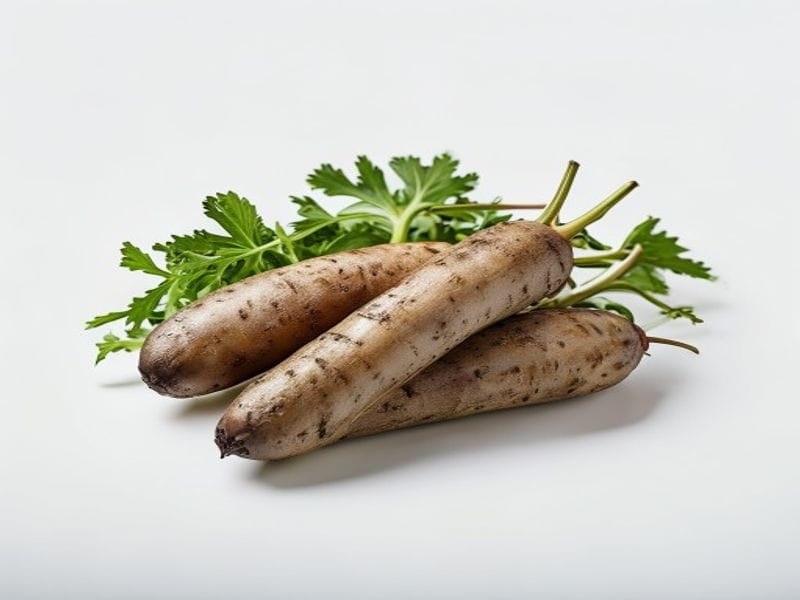

Warzywa
Bataty
Bataty: 1.6 g białka, 86 kcal, 20 g węglowodanów i 0.1 g tłuszczu na 100 g. Kategoria: Warzywa.
Kalorie86 kcalna 100 g
Białko / proteiny1.6 g
Węglowodany20 g
Tłuszcz0.1 g
Cena (szac.)~0,85 złza 100 g
Ceny zaktualizowano: maj 2026 (szacunek — ceny w popularnych supermarketach)
Porcja: sztuka średnia (200g)
| Kalorie | 172 kcal |
|---|---|
| Białko | 3.2 g |
| Węglowodany | 40 g |
| Tłuszcz | 0.2 g |
| Cena (szac.) | ~1,70 zł |
Szczegółowe składniki odżywcze na 100 g
| Wartość energetyczna (kalorie) | 86 kcal |
|---|---|
| Białko (proteiny) | 1.6 g |
| Węglowodany | 20 g |
| Tłuszcz | 0.1 g |
| Tłuszcze nasycone | 0 g |
| Tłuszcze nienasycone | 0.1 g |
| Witaminy i minerały | Witamina A, Potas, Witamina C |
| Współczynnik kcal / 1 g białka | 53.8 |
| Cena produktu (szac. za 100 g) | ~0,85 zł |
| Cena za 100 g białka (szac.) | ~53,13 zł |